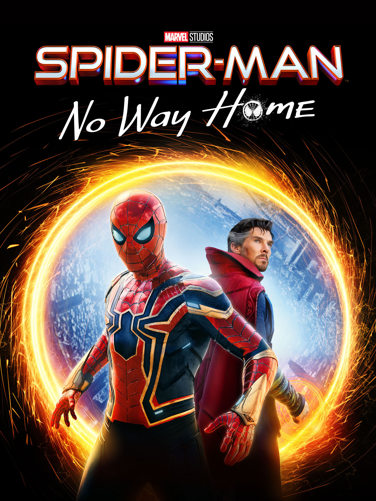

| No |
Cover |
Judul |
Deskripsi |
| 1 |
 |
Avengers: Endgame |
Avengers: Endgame adalah film pahlawan super Amerika tahun 2019 yang berdasarkan kisah tim pahlawan super Avengers dari Marvel Comics. Film yang diproduksi oleh Marvel Studios dan didistribusikan oleh Walt Disney Studios Motion Pictures ini adalah sekuel langsung Avengers: Infinity War (2018) dan merupakan film ke-22 Marvel Cinematic Universe (MCU). Film ini disutradarai oleh Anthony dan Joe Russo dan ditulis oleh Christopher Markus dan Stephen McFeely, dan menampilkan pemeran ensambel di antaranya Robert Downey Jr., Chris Evans, Mark Ruffalo, Chris Hemsworth, Scarlett Johansson, Jeremy Renner, Don Cheadle, Paul Rudd, Brie Larson, Karen Gillan, Danai Gurira, Benedict Wong, Jon Favreau, Bradley Cooper, Gwyneth Paltrow, dan Josh Brolin. Pada film ini, anggota Avengers yang masih hidup dan para sekutunya berusaha untuk membalikkan kerusakan yang disebabkan oleh Thanos dalam Infinity War. |
| 2 |
 |
pider-Man: No Way Home |
pider-Man: No Way Home adalah film pahlawan super Amerika Serikat berdasarkan karakter Marvel Comics, Spider-Man, yang diproduksi bersama oleh Marvel Studios, Columbia Pictures dan Pascal Pictures, dan didistribusikan oleh Sony Pictures Releasing. Film ini adalah sekuel Spider-Man: Homecoming (2017) dan Spider-Man: Far From Home (2019), dan merupakan film ke-27 di Marvel Cinematic Universe (MCU). Film ini disutradarai oleh Jon Watts, ditulis oleh Chris McKenna dan Erik Sommers, dan dibintangi oleh Tom Holland, Tobey Maguire, dan Andrew Garfield sebagai Peter Parker / Spider-Man, bersama Zendaya, Jacob Batalon, Marisa Tomei, Jamie Foxx, Benedict Cumberbatch dan Alfred Molina. |
| 3 |
|
Fast & Furious 6 |
Fast & Furious 6 (disebut juga Fast Six atau Furious Six)[4] adalah film laga tahun 2013 yang ditulis oleh Chris Morgan dan disutradarai Justin Lin. Ini adalah film keenam dalam seri film Fast and the Furious. Film ini dibintangi Vin Diesel, Paul Walker, Dwayne Johnson, Michelle Rodriguez, Jordana Brewster, Tyrese Gibson, Chris Bridges, Sung Kang, Luke Evans, Gina Carano, John Ortiz dan aktor asal Indonesia Joe Taslim. Fast & Furious 6 mengisahkan sebuah kelompok kriminal profesional yang pimpinan Dominic Toretto (Diesel) yang pensiun pasca-perampokan mereka di Fast Five (2011), tetapi masih buron. Agen U.S. Diplomatic Security Service (DSS) Luke Hobbs (Johnson) berjanji menghapus catatan kriminal mereka dan mengizinkan mereka pulang jika mau membantunya memburu sebuah organisasi pembunuh bayaran profesional yang dipimpin Owen Shaw (Evans) dan wakilnya, Letty Ortiz (Rodriguez). |
| 4 |
|
Avatar |
Seorang Marinir lumpuh dikirim ke bulan Pandora untuk menjalani misi khusus namun, ia justru dilema antara mengikuti perintah atau melindungi dunia baru yang iya rasakan seperti rumah. |
| 5 |
 |
Toy story 2 |
Ketika Woody dicuri dan ditahan oleh seorang kolektor mainan, Buzz dan teman-temannya bertekad untuk menyelamatkannya. Tetapi Woody malah tergoda - bagaimana jika dirinya diabadikan di sebuah museum |